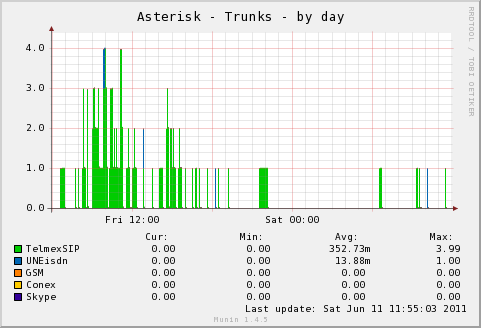
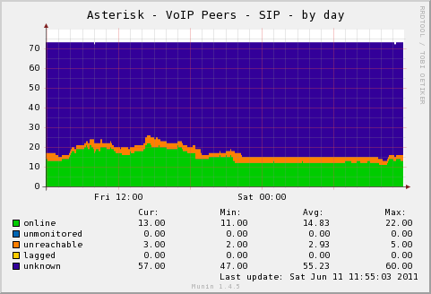
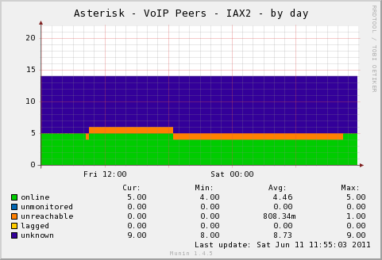
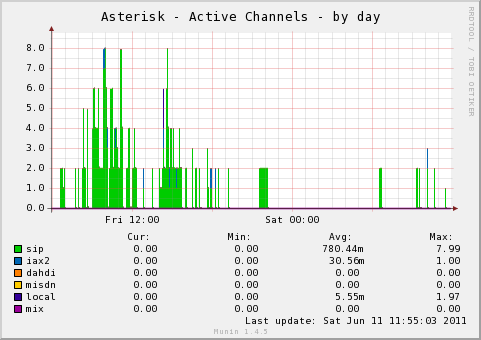
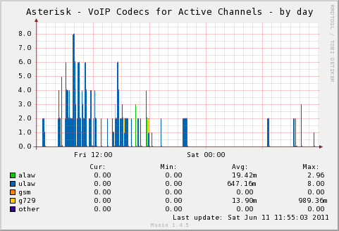

PyMunin Asterisk Plugin
PyMunin Multigraph Munin Plugin for monitoring Asterisk Telephony Server.
Asterisk Plugin - asteriskstats
The multigraph plugin implements the following graphs:
- asterisk_calls
- asterisk_channels
- asterisk_peers_sip
- asterisk_peers_iax2
- asterisk_voip_codecs
- asterisk_conferences
- asterisk_voicemail
- asterisk_trunks
- asterisk_queue_len
- asterisk_queue_avg_hold
- asterisk_queue_avg_talk
- asterisk_queue_calls
- asterisk_queue_abandon_pcent
- asterisk_fax_stats
Sample Graphs
 |
 |
|  |  |
|  |  |
Environment Variables
| Variable | Description |
|---|---|
| amihost | IP of Asterisk Server. (Default: 127.0.0.1) |
| amiport | Asterisk Manager Interface Port. (Default: 5038) |
| amiuser | Asterisk Manager Interface User. |
| amipass | Asterisk Manager Interface Password. |
| list_channels | List of channels that will be shown in channel stats. (Default: dahdi,zap,sip',iax2,local) |
| list_codecs | List of codecs that will be shown in VoIP channel stats. (Default: alaw,ulaw,gsm,g729) Any codec that is not in the list will be counted as 'other'. |
| list_trunks | Comma separated search expressions of the following formats:
|
| include_queues | Comma separated list of queues to include in graphs. (All queues included by default.) |
| exclude_queues | Comma separated list of queues to exclude from graphs. |
| include_graphs | Comma separated list of enabled graphs. (All graphs enabled by default.) |
| exclude_graphs | Comma separated list of disabled graphs. |